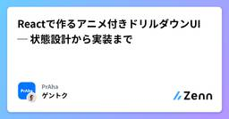

PrAhaのフィード
https://zenn.dev/p/praha
株式会社PrAhaでは、株式会社アガルートのサービス「アガルートアカデミー」の開発、自社サービス「PrAha Challenge」の運営、スタートアップに特化したデザインと受託開発を行なっています。一緒に働いてくれる方を血眼になって探しています。
フィード

Reactで作るアニメ付きドリルダウンUI ─ 状態設計から実装まで
PrAhaのフィード
業務でドリルダウン（UIパターン）を実現するコンポーネントを実装する機会がありました。状態管理やアニメーションの実装に関していろいろ考えることが多かったので、実装中何を考えていたのかをトレースして記事にまとめました。ドリルダウンに関する説明はソシオメディアさんの記事がわかりやすいので、そちらを参照してください。 実装したいコンポーネントのゴールを考えるドリルダウンを実装するにあたり、どのようなデータをどのようなAPIのコンポーネントで扱いたいかを考えます。扱うデータは、大分類>中分類>小分類のように階層的になっているデータを想定します。たとえば次のような部署>...
5日前

MCPサーバーでTSDocを参照出来るようにする
PrAhaのフィード
はじめに近年、ClaudeをはじめとしたLLMの進化はめざましく、日々の開発補助や設計検討など、ソフトウェアエンジニアリングのあらゆる場面で利用されるようになってきました。しかし、LLMの持つ知識は訓練データのカットオフ時点までのものに限られているという制約があります。これにより、比較的新しいOSSライブラリを使用する際、LLMがそのライブラリを正しく理解・活用できないという問題が発生します。例えば、弊社で最近公開した@praha/byethrowというResult型ライブラリがあります。これはneverthrowなどにインスパイアされた軽量・シンプルなAPIを提供するType...
15日前
@praha/byethrowの全機能リファレンス
PrAhaのフィード
はじめに前回の記事で@praha/byethrowについて紹介しましたが、本記事ではこのライブラリの全機能についてより詳しく紹介したいと思います。@praha/byethrowは、JavaScript/TypeScript向けの軽量でシンプルなエラーハンドリングライブラリです。Result型を用いることで、関数の成功と失敗を明示的に表現し、try/catchに頼らない型安全なエラーハンドリングを実現できます。以下では、Resultモジュールに含まれる全ての関数について、用途 (何をする関数か)、引数, 戻り値, 使用例コードの順で解説します。まだこのライブラリを知らない方でも分...
17日前
TreeShakableなResultライブラリを作りました
PrAhaのフィード
はじめにJavaScriptでは、throwを使ってエラーを明示的に投げることで、処理を中断する「大域脱出」が可能です。しかし、TypeScriptではこのthrowによって発生するエラーの型を記述できないため、型安全性が損なわれてしまいます。この問題を解決するために、関数の成功・失敗を明示的に扱えるResult型が有用です。TypeScriptでResult型を利用する場合、neverthrowやeffect-ts、fp-tsなどのライブラリがよく挙げられます。しかし、それぞれ一長一短があり、neverthrowは比較的シンプルで使いやすいものの、現在は活発なメンテナンスが...
18日前
Flutter初心者にflutter_hooksは必要ないかもしれない
PrAhaのフィード
2024年5月頃から社内でモバイルアプリを開発するチームが立ち上がりました。チーム全員がReactには慣れている一方でほとんどのメンバーがFlutter未経験という状態で、以下のような期待からflutter_hooksの導入を決めました。Widgetからロジックを切り出せるため、Widgetの見通しが良くなる・コードの記述量が減るのではないか慣れているReactHooksのように書けるため、Flutterの学習コストを下げることができるのではないかriverpod・graphql_flutterなど他に採用したライブラリのドキュメントにflutter_hooksと統合するため...
1ヶ月前
beforeAll,afterAll,beforeEach,afterEachの順番を永遠に覚えられないので図解した
PrAhaのフィード
これってどういう順番になるんだっけ？って毎回なるので図解しました。 describeが2個の場合たとえば、以下の場合を考えます。describe('外側のdescribe', () => { beforeAll(() => console.log('🐔 beforeAll')); afterAll(() => console.log('🐔 afterAll')); beforeEach(() => console.log('🐔 beforeEach')); afterEach(() => console.log('🐔 afterEac...
4ヶ月前
Drizzle ORMでテストデータの生成を簡単にする
PrAhaのフィード
はじめに弊社では、テスト実行時にデータベースをモックせず、Testcontainers を用いて実際のデータベースを使用したテストを行っています。このようなテストを行うためには、事前にテストデータを準備する必要があります。しかし、テストデータの作成は煩雑になりがちで、可読性の低下やメンテナンスの手間が増える原因となります。そこで、テストデータの生成をより簡単にするために、Drizzle ORMを活用したテストデータ生成パッケージ@praha/drizzle-factory を開発しました。本記事では、@praha/drizzle-factoryの基本的な使い方について紹介し...
4ヶ月前
【MySQL】手を動かして学ぶトランザクション入門
PrAhaのフィード
「これを見たらトランザクション周りがざっくり分かる」を目指します。MySQLを前提に解説しますが、他のDBMSでもベースとなる部分は同じだと思います。 トランザクションとは？ざっくり言うと「ここからここまでワンセットです」な処理のことです。たとえば、以下のようなSQLが2つあったとします。在庫を減らすSQL;発送処理をするSQL;この2つは絶対にセットで実行したいとします。ですが、この2つを実行した結果「1つ目は成功したけど2つ目は失敗した」となった場合、「在庫だけ減ってしまった！」になってしまいます。こういうときにトランザクションが使えます。この2つをトランザクシ...
4ヶ月前
PullRequestのマージ待ちの管理を自動化した
PrAhaのフィード
Renovateという自動ライブラリ更新botを利用し始めたのですが，マージの順番管理をする時間が増えてしまったので，その自動化をしました．短く言うとこうです．Renovate（またはDependabot）を利用していてGitHubのマージ前にブランチを最新にするルールを利用していると（Renovate以外の）PullRequestがなかなかマージできなくて困るのでマージ順を管理するGitHub ActionsであるMerge Masterを作りましたついでに，Enable auto-mergeを押すだけでいい感じにマージされるようになって便利になりました Reno...
5ヶ月前
ライブラリ選定のときに使えるツールあれこれ
PrAhaのフィード
自分が使ってるやつを紹介します。 GitHub Star History指定したGitHubリポジトリのスターの増加数をグラフで見れるサイトです。たとえば、👇の3つのReactのUIライブラリを例に見てみます。muichakra-uishadcn-ui▲https://star-history.com/#shadcn-ui/ui&chakra-ui/chakra-ui&mui/material-ui&Dateこんな感じで、一目でライブラリの人気度合いをざっくり比較できます。 使い方テキストボックスに、比較したいライブラリのGitHubリ...
5ヶ月前
DrizzleORMのGoldスポンサーになりました
PrAhaのフィード
はじめに私たちは最近、DrizzleORMのGoldスポンサー($1,000/月)になりました。本記事では、DrizzleORMについての簡単な紹介と、OSSスポンサーになるメリットについてご紹介します。 DrizzleORMとはDrizzleORMとは、TypeScript製のORMライブラリです。シンプルなAPIを提供し、SQLに似たインターフェースでデータベースを操作できる点が特徴です。テーブル定義をTypeScriptで記述でき、TypeScriptの型システムを活用することで、型安全なSQLを作成することができます。例えば、SELECT文は次のように記述でき...
5ヶ月前
モバイルアプリをリーダーアプリとして実装してアプリ内購入の実装を回避する
PrAhaのフィード
リーダーアプリとはリーダーアプリとは雑誌、新聞、書籍、オーディオ、音楽、ビデオなどのデジタルコンテンツの閲覧をアプリの主な機能として提供するアプリです。通常、モバイルアプリ内で有料コンテンツを利用する場合はアプリ内購入を実装してアプリ内から有料コンテンツを購入できるようにする必要があります。リーダーアプリとして実装されたアプリはその限りではなく、アプリ外で作成されたアカウントにアプリからサインイン => そのアカウントで購入したコンテンツをアプリで閲覧することができます。今回は他のウェブサイトでアカウント作成とコンテンツの購入をする前提で、そのコンテンツを閲覧するアプリ...
6ヶ月前
データベースを止めずにテーブル設計を変更したい
PrAhaのフィード
プラハチャレンジにて、受講生チームから次のような質問がありました。データベース（RDB）のテーブル設計を変更したいテーブル設計を変更する作業中にアプリケーションからデータベースへのアクセスが発生すると困るメンテナンス期間を設けアプリケーションを一時的に停止することで、データベースへのアクセスを防ぐことはできるデータベースを止めることなくテーブル設計を変更する方法はないかこの質問に対して、Expand and Contract patternを紹介しました。この記事では、Expand and Contract patternを用いてテーブル設計を移行する方法を例を交えて紹介...
7ヶ月前
ウミガメのスープを1人で遊べるアプリを作りました
PrAhaのフィード
1人でウミガメのスープを遊べるiOSアプリを作りました。https://apps.apple.com/jp/app/1人でウミガメのスープ/id6544801645 アプリの概要「ウミガメのスープ」は以下のようなゲームです。出題者が問題を出し、他の人は「はい」または「いいえ」で答えられる質問を出す。質問者は、出題者が考えているストーリー、あるいは物を推測して語る。それがすべての謎を説明できたとき、このパズルは解けたことになる。（Wikipedia - シチュエーションパズルより引用）通常は複数人でプレイするゲームですが、このアプリでは出題者をChatGPTに担当してもら...
8ヶ月前
【懺悔】Chu！雑にチケット切ってごめん
PrAhaのフィード
むかしむかしあるところに※おおむね嘘です めでたくリリース！までは幸せだったボス🧔♂️ < 今日から新規プロジェクトを立ち上げる！ボス🧔♂️ < まず、君には基幹システムからのデータ連携システムの構築を任せる。ボス🧔♂️ < 連携元システムの担当者はxxxさんだ。詳細は彼と詰めてくれたまえ。私👨🏻💻 < ラジャ！...私👨🏻💻 < でけたっす！ボス🧔♂️ < よくやってくれた。では次のタスクを～...。...ボス🧔♂️ < 無事リリースだ！お疲れ様！ボス🧔♂️ < 早速次のプロジェクトに移っても...
8ヶ月前
Next.js 15 和訳
PrAhaのフィード
https://nextjs.org/blog/next-15雑に翻訳しました。意訳がめちゃくちゃ含まれているので注意です。Next.js 15が正式に安定版としてリリースされました。このリリースはRC1とRC2のアップデートをベースにしています。安定性に重点を置きながら、気に入っていただけるようなエキサイティングなアップデートを追加しました。今すぐNext.js 15をお試しください。# 新しい自動アップグレードCLIを使用するnpx @next/codemod@canary upgrade latest # もしくは手動でアップグレードするnpm instal...
8ヶ月前
Next.js 15 RC2 和訳
PrAhaのフィード
https://nextjs.org/blog/next-15-rc2雑に翻訳しました。意訳がめちゃくちゃ含まれているので注意です。5月に最初のNext.js 15 リリース候補版を発表した後、皆さまからのフィードバックをもとに、2回目のリリース候補版を準備してきました。 以下がその内容です。@next/codemod upgrade: Next.jsとReactの最新バージョンに簡単にアップグレードできるようになりました。Turbopack for development: パフォーマンスの向上とNext.js 15の安定性を目指した改善。Async Reques...
9ヶ月前
プルリクを気持ちよくレビューしあえるコツあれこれ
PrAhaのフィード
GitHub前提です！順不同です。 コードを提案する❌divではなく、spanを使ったほうが良いと思いました！✅divではなく、spanを使ったほうが良いと思いました！+ <div>山田</div>- <span>山田</span>文章だけで「ここはこうした方がいい」を説明するより、コードも一緒に提案してあげた方が分かりやすいです。GitHub上だと、以下のように操作するとコードの提案ができます👇️ GitHubのリンクを貼る時はパーマリンクを使う❌https://github.com/prisma...
9ヶ月前
連続記録を算出するSQLが難しかった
PrAhaのフィード
はじめに連続ログイン記録のようなものは，多くのアプリケーションに実装されています．しかし，いざログから連続記録を算出する機能を実装してみるとなると，かなり複雑なSQLが必要になりました．chito_ngさんの「『継続して○○した日数』とその最大値をSQLで求める」を参考に実装しました．結構苦労したので，備忘録がてら残そうと思います．PostgreSQLを利用します． SQLで連続記録を算出する今回は問題演習アプリを例に取り，連続学習日数を取得しようと思います．以下のようなanswersテーブルから，連続学習日数を取得します．user_idanswer_id...
9ヶ月前
Chrome DevToolsを使いこなしてフロントエンド開発を加速させる
PrAhaのフィード
Chrome DevTools（以下、開発者ツール）は開発者にとって欠かせないツールですが、改めて使い方を調べたことは少ないのではないでしょうか？この記事では開発者ツールの便利な機能をまとめて紹介します！筆者はChromeをメインで使用しているのでChrome DevTools前提ですが、一部拡張機能や他のブラウザの便利な機能を含みます。 スクリーンショットをキャプチャする端末の機能でもスクリーンショットをキャプチャすることはできますが、開発者ツールではより便利なスクリーンショットの機能が提供されています。 特定のノードのスクリーンショットをキャプチャするElements...
10ヶ月前